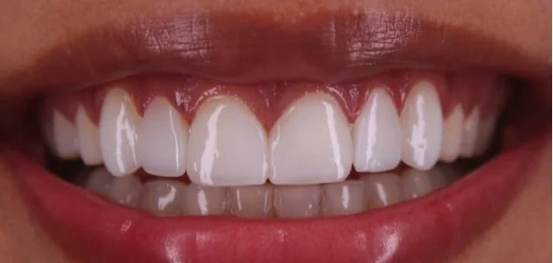
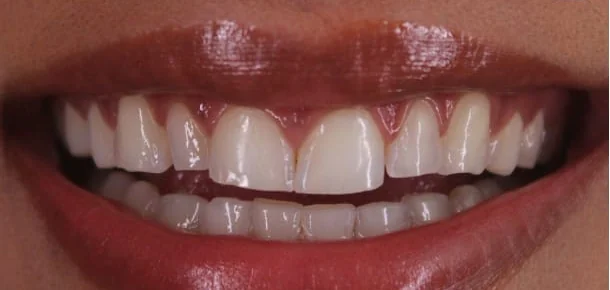
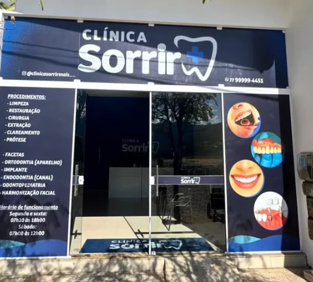

Esmalte
A parte que todo mundo vê, e a mais dura do corpo. Limpeza, clareamento e restaurações mantêm essa casca forte e bonita.
Clínica odontológica em Macaúbas, Bahia. De segunda a sábado, com marcação pelo WhatsApp.
Marcar consultaDo esmalte à raiz, cuidado em cada camada.
Aquela dor que você vem deixando pra depois.
O sorriso escondido na foto de família.
O medo da cadeira, que quase ninguém comenta.
Aqui, a primeira consulta é uma conversa.
A parte que todo mundo vê, e a mais dura do corpo. Limpeza, clareamento e restaurações mantêm essa casca forte e bonita.
Fica logo abaixo do esmalte. Quando a cárie chega aqui, aparece a sensibilidade ao gelado e ao doce. Tratar cedo é mais simples.
O nervo do dente. Dor que lateja à noite costuma vir daqui, e o tratamento de canal salva o dente em vez de arrancar.
A base de tudo. Gengiva que sangra é sinal de alerta. É aqui que entram o cuidado com a gengiva e, quando falta um dente, o implante.
Sem formulário comprido e sem ligação em horário de trabalho. Tudo pelo WhatsApp.
Diga seu nome e o que está sentindo. Pode ser só "quero uma avaliação".
A equipe confirma com você o dia e o período que cabem na sua rotina.
O dentista examina, explica o que viu e monta com você o plano de tratamento.
Toque em Quero esse e o tratamento já entra na sua mensagem de agendamento.
Prevenção, remoção de tártaro e flúor. O melhor caminho para evitar dor.
Cárie tratada cedo, com resina da cor do dente.
Endodontia para salvar o dente quando a dor vem do nervo.
Dentes mais claros com acompanhamento, sem receita de internet.
Lâminas finas que corrigem cor, forma e desgaste dos dentes da frente.
Ortodontia para alinhar os dentes e acertar a mordida.
Odontopediatria: primeira consulta e cuidado num ritmo que a criança acompanha.
Implantes e próteses para devolver o dente que falta.
Extrações, inclusive do siso, com anestesia e orientação para o pós.
Harmonização facial para equilibrar o rosto com o sorriso.
Não sabe qual é o seu caso?
Normal. Marque uma avaliação e a gente descobre junto.
Casos atendidos aqui na clínica e publicados no nosso Instagram. Arraste o dente para comparar.


Cirurgião-dentista · CRO-BA 28473
Clínico geral, facetas estéticas, restauração, cirurgia, prótese, canal e clareamento.
Cirurgiã-dentista · CRO-BA 30324
Clínico geral, atendimento infantil, restauração, cirurgia, prótese, canal e clareamento.
Cirurgiã-dentista · CRO-BA 24242
Clínico geral, ortodontia, canal, restauração, cirurgia, prótese, clareamento e atendimento infantil.

Procure a fachada azul com a placa da Clínica Sorrir, em Macaúbas, Bahia.
Ver rota no mapa Instagram (77) 99999-4451
As cores deste site vêm do quartzito Azul Macaúbas, a pedra azul da nossa terra, e do azul da nossa marca.
Monte a mensagem aqui. O WhatsApp abre com tudo escrito, é só enviar.